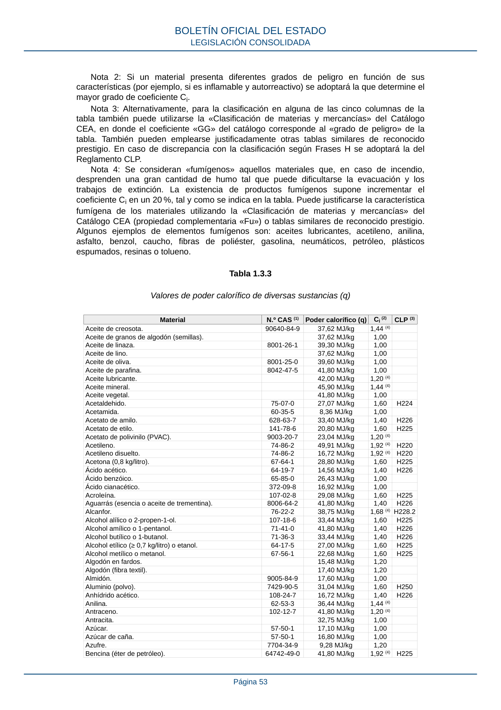

RSCIEI · Página 53 · versión 2025-04-10
SHA256: 85aa0af25d51e5b58d8975a4eefbf76d3f57a8933445cfe814ae9c4818a2e3e7 · página física 53 de 108 · métodos de encabezado
solo si están cotejados.
Formatos: Markdown · JSON de bloques · PDF p. 53 · imagen PNG
Nota 2: Si un material presenta diferentes grados de peligro en función de sus características (por ejemplo, si es inflamable y autorreactivo) se adoptará la que determine el mayor grado de coeficiente Ci. Nota 3: Alternativamente, para la clasificación en alguna de las cinco columnas de la tabla también puede utilizarse la «Clasificación de materias y mercancías» del Catálogo CEA, en donde el coeficiente «GG» del catálogo corresponde al «grado de peligro» de la tabla. También pueden emplearse justificadamente otras tablas similares de reconocido prestigio. En caso de discrepancia con la clasificación según Frases H se adoptará la del Reglamento CLP. Nota 4: Se consideran «fumígenos» aquellos materiales que, en caso de incendio, desprenden una gran cantidad de humo tal que puede dificultarse la evacuación y los trabajos de extinción. La existencia de productos fumígenos supone incrementar el coeficiente Ci en un 20 %, tal y como se indica en la tabla. Puede justificarse la característica fumígena de los materiales utilizando la «Clasificación de materias y mercancías» del Catálogo CEA (propiedad complementaria «Fu») o tablas similares de reconocido prestigio. Algunos ejemplos de elementos fumígenos son: aceites lubricantes, acetileno, anilina, asfalto, benzol, caucho, fibras de poliéster, gasolina, neumáticos, petróleo, plásticos espumados, resinas o tolueno. Tabla 1.3.3 Valores de poder calorífico de diversas sustancias (q) Material N.º CAS (1) Poder calorífico (q) Ci (2) CLP (3) Aceite de creosota. 90640-84-9 37,62 MJ/kg 1,44 (4) Aceite de granos de algodón (semillas). 37,62 MJ/kg 1,00 Aceite de linaza. 8001-26-1 39,30 MJ/kg 1,00 Aceite de lino. 37,62 MJ/kg 1,00 Aceite de oliva. 8001-25-0 39,60 MJ/kg 1,00 Aceite de parafina. 8042-47-5 41,80 MJ/kg 1,00 Aceite lubricante. 42,00 MJ/kg 1,20 (4) Aceite mineral. 45,90 MJ/kg 1,44 (4) Aceite vegetal. 41,80 MJ/kg 1,00 Acetaldehido. 75-07-0 27,07 MJ/kg 1,60 H224 Acetamida. 60-35-5 8,36 MJ/kg 1,00 Acetato de amilo. 628-63-7 33,40 MJ/kg 1,40 H226 Acetato de etilo. 141-78-6 20,80 MJ/kg 1,60 H225 Acetato de polivinilo (PVAC). 9003-20-7 23,04 MJ/kg 1,20 (4) Acetileno. 74-86-2 49,91 MJ/kg 1,92 (4) H220 Acetileno disuelto. 74-86-2 16,72 MJ/kg 1,92 (4) H220 Acetona (0,8 kg/litro). 67-64-1 28,80 MJ/kg 1,60 H225 Ácido acético. 64-19-7 14,56 MJ/kg 1,40 H226 Ácido benzóico. 65-85-0 26,43 MJ/kg 1,00 Ácido cianacético. 372-09-8 16,92 MJ/kg 1,00 Acroleína. 107-02-8 29,08 MJ/kg 1,60 H225 Aguarrás (esencia o aceite de trementina). 8006-64-2 41,80 MJ/kg 1,40 H226 Alcanfor. 76-22-2 38,75 MJ/kg 1,68 (4) H228.2 Alcohol alílico o 2-propen-1-ol. 107-18-6 33,44 MJ/kg 1,60 H225 Alcohol amílico o 1-pentanol. 71-41-0 41,80 MJ/kg 1,40 H226 Alcohol butílico o 1-butanol. 71-36-3 33,44 MJ/kg 1,40 H226 Alcohol etílico (≥ 0,7 kg/litro) o etanol. 64-17-5 27,00 MJ/kg 1,60 H225 Alcohol metílico o metanol. 67-56-1 22,68 MJ/kg 1,60 H225 Algodón en fardos. 15,48 MJ/kg 1,20 Algodón (fibra textil). 17,40 MJ/kg 1,20 Almidón. 9005-84-9 17,60 MJ/kg 1,00 Aluminio (polvo). 7429-90-5 31,04 MJ/kg 1,60 H250 Anhídrido acético. 108-24-7 16,72 MJ/kg 1,40 H226 Anilina. 62-53-3 36,44 MJ/kg 1,44 (4) Antraceno. 102-12-7 41,80 MJ/kg 1,20 (4) Antracita. 32,75 MJ/kg 1,00 Azúcar. 57-50-1 17,10 MJ/kg 1,00 Azúcar de caña. 57-50-1 16,80 MJ/kg 1,00 Azufre. 7704-34-9 9,28 MJ/kg 1,20 Bencina (éter de petróleo). 64742-49-0 41,80 MJ/kg 1,92 (4) H225 BOLETÍN OFICIAL DEL ESTADO LEGISLACIÓN CONSOLIDADA Página 53
